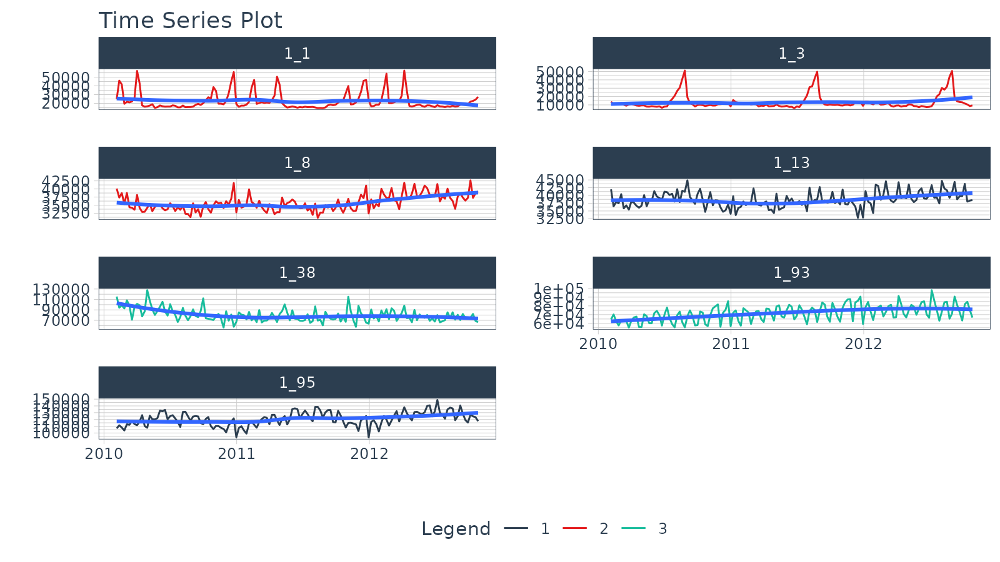

vignettes/TK09_Clustering.Rmd
TK09_Clustering.RmdClustering is an important part of time series analysis that allows us to organize time series into groups by combining “tsfeatures” (summary matricies) with unsupervised techniques such as K-Means Clustering. In this short tutorial, we will cover the tk_tsfeatures() functions that computes a time series feature matrix of summarized information on one or more time series.
This tutorial will use the walmart_sales_weekly dataset:
walmart_sales_weekly## # A tibble: 1,001 × 17
## id Store Dept Date Weekly_Sales IsHoliday Type Size Temperature
## <fct> <dbl> <dbl> <date> <dbl> <lgl> <chr> <dbl> <dbl>
## 1 1_1 1 1 2010-02-05 24924. FALSE A 151315 42.3
## 2 1_1 1 1 2010-02-12 46039. TRUE A 151315 38.5
## 3 1_1 1 1 2010-02-19 41596. FALSE A 151315 39.9
## 4 1_1 1 1 2010-02-26 19404. FALSE A 151315 46.6
## 5 1_1 1 1 2010-03-05 21828. FALSE A 151315 46.5
## 6 1_1 1 1 2010-03-12 21043. FALSE A 151315 57.8
## 7 1_1 1 1 2010-03-19 22137. FALSE A 151315 54.6
## 8 1_1 1 1 2010-03-26 26229. FALSE A 151315 51.4
## 9 1_1 1 1 2010-04-02 57258. FALSE A 151315 62.3
## 10 1_1 1 1 2010-04-09 42961. FALSE A 151315 65.9
## # … with 991 more rows, and 8 more variables: Fuel_Price <dbl>,
## # MarkDown1 <dbl>, MarkDown2 <dbl>, MarkDown3 <dbl>, MarkDown4 <dbl>,
## # MarkDown5 <dbl>, CPI <dbl>, Unemployment <dbl>Using the tk_tsfeatures() function, we can quickly get the “tsfeatures” for each of the time series. A few important points:
The features parameter come from the tsfeatures R package. Use one of the function names from tsfeatures R package e.g.(“lumpiness”, “stl_features”).
We can supply any function that returns an aggregation (e.g. “mean” will apply the base::mean() function).
You can supply custom functions by creating a function and providing it (e.g. my_mean() defined below)
# Custom Function
my_mean <- function(x, na.rm=TRUE) {
mean(x, na.rm = na.rm)
}
tsfeature_tbl <- walmart_sales_weekly %>%
group_by(id) %>%
tk_tsfeatures(
.date_var = Date,
.value = Weekly_Sales,
.period = 52,
.features = c("frequency", "stl_features", "entropy", "acf_features", "my_mean"),
.scale = TRUE,
.prefix = "ts_"
) %>%
ungroup()
tsfeature_tbl## # A tibble: 7 × 22
## id ts_frequency ts_nperiods ts_seasonal_per… ts_trend ts_spike ts_linearity
## <fct> <dbl> <dbl> <dbl> <dbl> <dbl> <dbl>
## 1 1_1 52 1 52 0.000670 2.80e-5 -0.0581
## 2 1_3 52 1 52 0.0614 9.87e-6 0.511
## 3 1_8 52 1 52 0.756 1.95e-6 6.41
## 4 1_13 52 1 52 0.354 4.75e-6 2.74
## 5 1_38 52 1 52 0.425 1.79e-5 -4.07
## 6 1_93 52 1 52 0.791 7.54e-7 6.22
## 7 1_95 52 1 52 0.639 5.67e-7 3.94
## # … with 15 more variables: ts_curvature <dbl>, ts_e_acf1 <dbl>,
## # ts_e_acf10 <dbl>, ts_seasonal_strength <dbl>, ts_peak <dbl>,
## # ts_trough <dbl>, ts_entropy <dbl>, ts_x_acf1 <dbl>, ts_x_acf10 <dbl>,
## # ts_diff1_acf1 <dbl>, ts_diff1_acf10 <dbl>, ts_diff2_acf1 <dbl>,
## # ts_diff2_acf10 <dbl>, ts_seas_acf1 <dbl>, ts_my_mean <dbl>We can quickly add cluster assignments with the kmeans() function and some tidyverse data wrangling.
set.seed(123)
cluster_tbl <- tibble(
cluster = tsfeature_tbl %>%
select(-id) %>%
as.matrix() %>%
kmeans(centers = 3, nstart = 100) %>%
pluck("cluster")
) %>%
bind_cols(
tsfeature_tbl
)
cluster_tbl## # A tibble: 7 × 23
## cluster id ts_frequency ts_nperiods ts_seasonal_period ts_trend ts_spike
## <int> <fct> <dbl> <dbl> <dbl> <dbl> <dbl>
## 1 2 1_1 52 1 52 0.000670 0.0000280
## 2 2 1_3 52 1 52 0.0614 0.00000987
## 3 2 1_8 52 1 52 0.756 0.00000195
## 4 1 1_13 52 1 52 0.354 0.00000475
## 5 3 1_38 52 1 52 0.425 0.0000179
## 6 3 1_93 52 1 52 0.791 0.000000754
## 7 1 1_95 52 1 52 0.639 0.000000567
## # … with 16 more variables: ts_linearity <dbl>, ts_curvature <dbl>,
## # ts_e_acf1 <dbl>, ts_e_acf10 <dbl>, ts_seasonal_strength <dbl>,
## # ts_peak <dbl>, ts_trough <dbl>, ts_entropy <dbl>, ts_x_acf1 <dbl>,
## # ts_x_acf10 <dbl>, ts_diff1_acf1 <dbl>, ts_diff1_acf10 <dbl>,
## # ts_diff2_acf1 <dbl>, ts_diff2_acf10 <dbl>, ts_seas_acf1 <dbl>,
## # ts_my_mean <dbl>Finally, we can visualize the cluster assignments by joining the cluster_tbl with the original walmart_sales_weekly and then plotting with plot_time_series().
cluster_tbl %>%
select(cluster, id) %>%
right_join(walmart_sales_weekly, by = "id") %>%
group_by(id) %>%
plot_time_series(
Date, Weekly_Sales,
.color_var = cluster,
.facet_ncol = 2,
.interactive = FALSE
)
My Talk on High-Performance Time Series Forecasting
Time series is changing. Businesses now need 10,000+ time series forecasts every day. This is what I call a High-Performance Time Series Forecasting System (HPTSF) - Accurate, Robust, and Scalable Forecasting.
High-Performance Forecasting Systems will save companies MILLIONS of dollars. Imagine what will happen to your career if you can provide your organization a “High-Performance Time Series Forecasting System” (HPTSF System).
I teach how to build a HPTFS System in my High-Performance Time Series Forecasting Course. If interested in learning Scalable High-Performance Forecasting Strategies then take my course. You will learn:
Modeltime - 30+ Models (Prophet, ARIMA, XGBoost, Random Forest, & many more)GluonTS (Competition Winners)